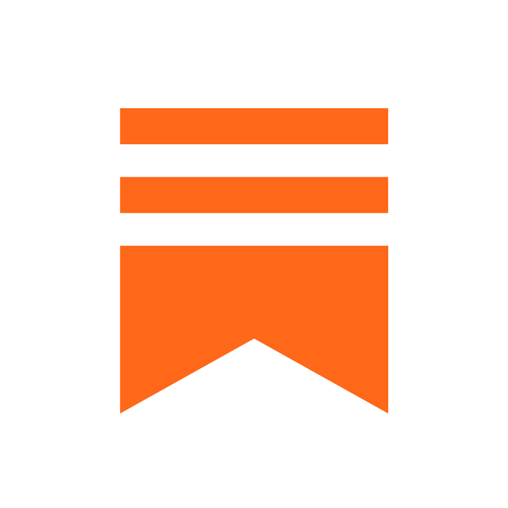

Produção audiovisual
Apoio no planejamento e na organização de materiais audiovisuais, pensando em narrativa, ritmo, formato, objetivo da peça e clareza da entrega.
produção criativa / audiovisual / digital
Atuo na criação, organização e desenvolvimento de projetos multimídia, conectando frontend, comunicação, audiovisual, games e inteligência artificial aplicada à criação.

sobre
Atuo na interseção entre produção audiovisual, experiências digitais, comunicação e conteúdo multimídia. Minha prática reúne organização de projetos, documentação, criação de materiais, apoio a eventos, desenvolvimento frontend e uso de inteligência artificial para acelerar processos criativos com mais clareza e consistência.
Trabalho bem na ponte entre ideia e execução: estruturar etapas, alinhar prioridades, organizar materiais, acompanhar entregas e transformar conceitos em peças, interfaces e experiências que precisam funcionar tanto criativamente quanto tecnicamente.
frentes de atuação
Minha atuação combina organização, linguagem digital, sensibilidade criativa e atenção à experiência do usuário para apoiar projetos do planejamento à entrega final.
Apoio no planejamento e na organização de materiais audiovisuais, pensando em narrativa, ritmo, formato, objetivo da peça e clareza da entrega.
Criação e estruturação de conteúdos para plataformas digitais, com atenção à linguagem da internet, consistência visual, calendário, público e adaptação de formatos.
Documentação, divisão de etapas, acompanhamento de tarefas e suporte para que ideias criativas saiam do conceito e avancem para entregas concretas.
Apoio na construção de mensagens, presença digital e materiais de comunicação, conectando conteúdo, público, tom de voz e objetivo do projeto.
Uso de ferramentas de inteligência artificial como apoio para pesquisa, ideação, organização de referências, otimização de processos e desenvolvimento de materiais criativos.
Base em design de games para pensar narrativa, interação, experiência do usuário, documentação e construção de projetos digitais com lógica e propósito.
experiências
Contextos que fortaleceram minha atuação em organização, comunicação, acompanhamento de equipes e construção de projetos com ritmo de entrega.
2Doods
Projeto autoral de produção digital e experimentação multimídia, com atuação em conteúdo, roteiro, planejamento editorial, organização de processos e desenvolvimento de materiais para mídias digitais. É um espaço em que conecto linguagem de internet, direção criativa e consistência de execução em projetos com identidade própria.
Frontend / UX
Projeto pessoal desenvolvido para consolidar minha atuação em frontend, UX e experiências digitais. O site reúne projetos web, interfaces responsivas, organização visual e aplicações interativas, funcionando também como demonstração prática da minha evolução técnica em HTML, CSS, JavaScript e design de interface.
Game Jam ECDD 2023
Atuação em suporte logístico, operacional e de comunicação com participantes em um ambiente criativo de prazo curto. A experiência fortaleceu minha capacidade de organização, acompanhamento de equipes, leitura de contexto e resposta rápida para manter a operação e a experiência do evento funcionando com fluidez.
Santander Open Academy
Apoio à organização de atividades, comunicação com participantes e acompanhamento de rotinas ligadas a programas educacionais. Somada à formação complementar em comunicação, inteligência artificial e produção, essa vivência ampliou meu repertório para projetos digitais com foco em clareza, aprendizagem e desenvolvimento profissional.
projetos & links autorais

Espaço de escrita, análise e reflexão sobre cultura, mídia, jogos e audiovisual.
Ler publicaçõesportfólio geral
Para ver também minha frente em web, UX, design e experiências digitais, o portfólio geral reúne projetos complementares à minha atuação em produção.
Abrir portfólio geralcurrículos
Currículo Produção / Audiovisual
Versão focada em produção multimídia, audiovisual, comunicação digital, eventos e projetos criativos.
Abrir / baixar currículoCurrículo Dev / Frontend
Versão focada em frontend, UX, experiências digitais e projetos web.
Baixar currículo devCurrículo Generalista
Versão mais generalista do currículo.
Abrir / baixar currículocursos & certificações
idiomas & competências
contato
Disponível para oportunidades de estágio, freelas, colaboração criativa e projetos em que organização, conteúdo, audiovisual e construção digital precisem caminhar juntos.